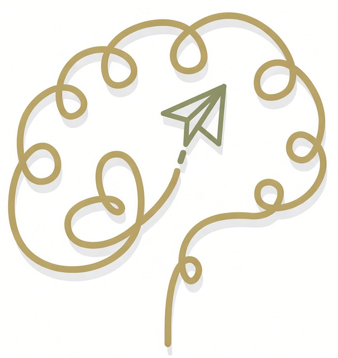
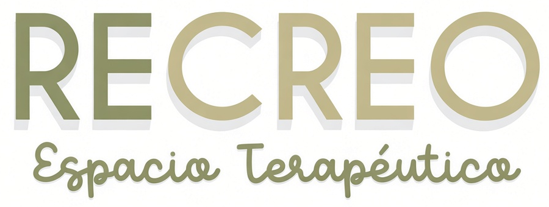

Psicología
Un espacio para poner en palabras y en juego lo que les pasa: emociones, vínculos, miedos y cambios.

RECREO Pedir turnoEspacio Terapéutico
Acompañamos a niños, niñas y adolescentes, y a sus familias, con un equipo de psicología, fonoaudiología, psicopedagogía y terapia ocupacional en San Nicolás de los Arroyos.

lo que hacemos
Cada niño llega con su historia. Miramos el todo y armamos el camino con la familia y la escuela.
Un espacio para poner en palabras y en juego lo que les pasa: emociones, vínculos, miedos y cambios.
Lenguaje, habla, voz y comunicación. Para que cada chico encuentre su manera de decir.
Cómo aprende cada uno. Acompañamos la lectura, la escritura, la atención y la vida en la escuela.
Juego, autonomía y procesamiento sensorial para que las cosas de todos los días sean más fáciles.
Evaluamos la audición en el mismo espacio, con tiempo y paciencia para los más chicos.
Encuentros grupales para crear, compartir y aprender con otros. Mirá los que están abiertos en Instagram.
sin vueltas
Es el mismo lugar al que te lleva el QR del consultorio.
Tocá “Ir a la agenda”. Se abre desde el celular o la compu.
Nombre, apellido, DNI y obra social del niño o adolescente.
Ves los horarios libres y reservás el que mejor les quede.
nuestro espacio
Rinconcitos, actividades, festejos y el equipo, todo en nuestro Instagram.
te esperamos
San Nicolás de los Arroyos, Buenos Aires.
Atendemos con turno. Si es la primera vez, escribinos y te contamos cómo empezar.